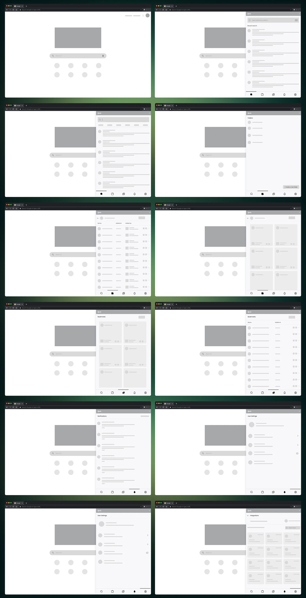
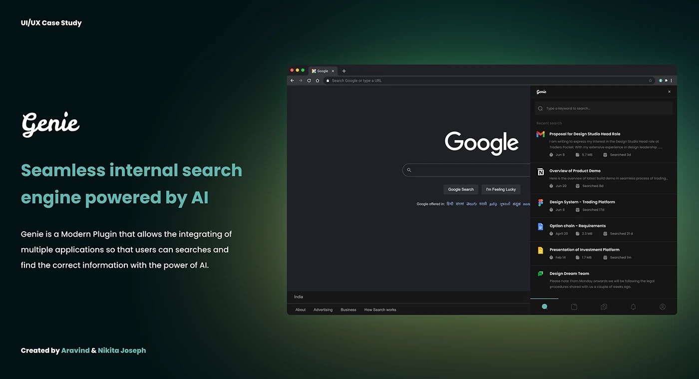
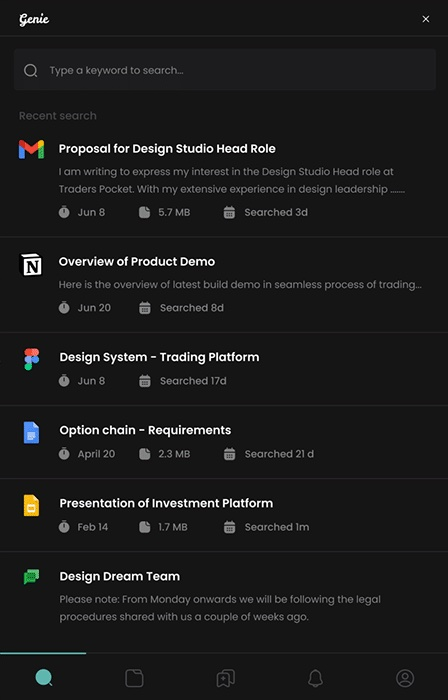
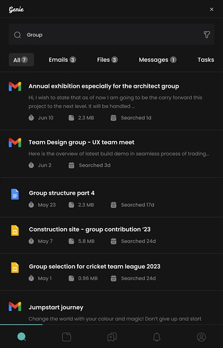
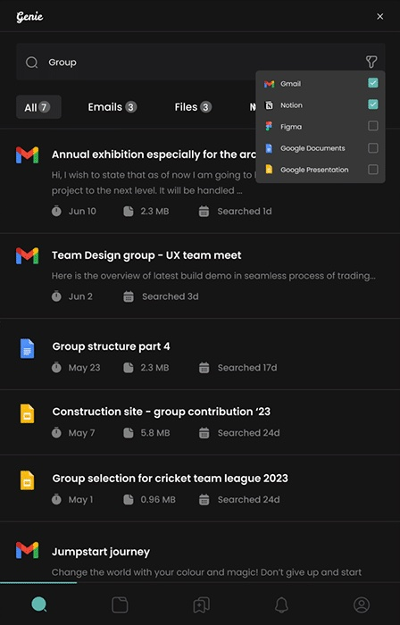
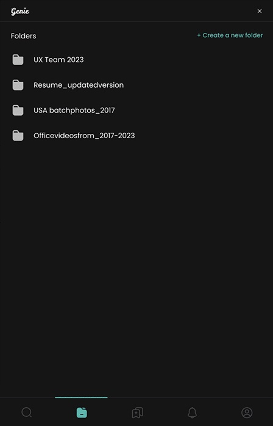
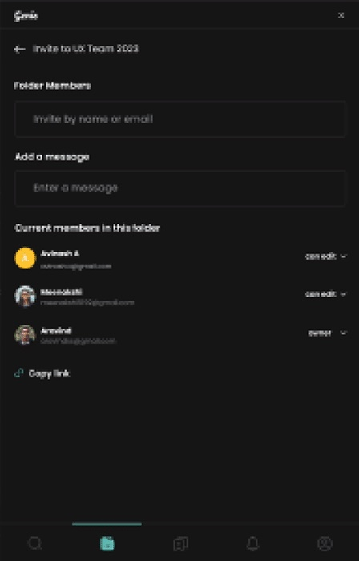
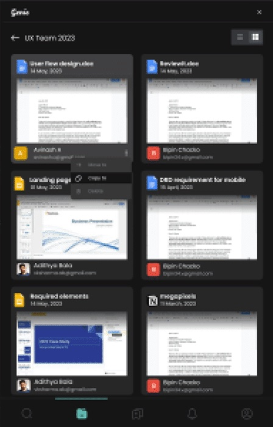
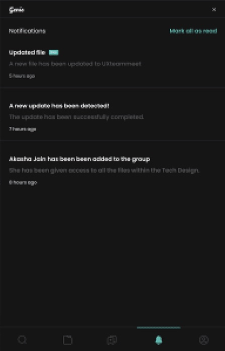
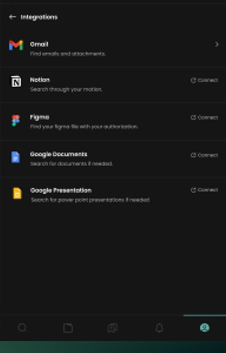

Overview
Search inside a company is slow, noisy and scattered.
Genie is an AI-powered plugin that sits beside your browser’s search. It searches across the apps a team already uses, learns what each person cares about, and lets them save, organise and share the links they keep coming back to.
Aravind took care of research; I took care of the user interface and the overall end-to-end UX. Together we went from problem to tested prototype in four weeks.
The problem
Conventional internal search can’t keep up with how teams work.
- Irrelevant results. People spend extra time filtering through things they didn’t ask for.
- No personalisation. Search doesn’t learn from behaviour, so it can’t suggest what’s new and useful.
- Rich media is a blind spot. Images, videos, documents and audio are hard to index and find.
Our goal: a seamless internal search engine, powered by AI, that understands intent, returns accurate results, personalises recommendations and handles every kind of content.
Process
Four weeks, five steps: concept, MVP, final product.
| Week | Stage | What we did |
|---|---|---|
| 1 · May 4 | Concept | Research (problems, existing apps), strategy (challenges, goals), content |
| 2 · May 11 | Concept → MVP | Information architecture, user flows, paper sketches; UI foundations |
| 3 · May 18 | MVP | Wireframes and prototype; colours, typography and layout; master copy |
| 4 · May 25 | Final product | High-fidelity prototype, usability testing and presentation |
Strategy
Who it’s for, and what success looks like.
Business goal
A seamless internal search engine powered by AI.
Target users
Designers, video editors, product managers, sales and marketers.
Platform
Web, as a browser plugin.
Success looks like
Finding the right information, reaching it whenever it’s needed, sharing links with people and organising them.
Everyday tasks
Search for information, save links into folders, share them with people — and get more done.
Research
Talking to people first, then checking with numbers.
Qualitative: interviews
Contextual interviews with employees, managers and administrators who rely on internal search — about 10 minutes each, over Google Meet. We asked:
- How often do you use your organisation’s internal search?
- What challenges or frustrations have you had with it? Can you give an example?
- What features do you wish it had but it’s missing?
- How important is personalisation in search?
- How would you rate how easy the current search is to use?
- Are you looking for any special features?
- What made an experience memorable or effective?
- What would you expect from an internal search engine powered by AI?
Quantitative: survey
A survey measured how widespread those needs were:
- 76%need to save important work into different folders
- 52%want to add people to folders and manage their access
- 89%need better integrations with the tools they use
Persona
Meet Robert, a graphic designer who can’t afford to search twice.
Robert · Graphic designer, Argentina
Bio. Gives his best at work and spends his free time learning new design skills and doing a little photography.
Goals
Find relevant information quickly; spend less time on manual searching; keep up with trends, reports and competitors.
Frustrations
Irrelevant results; nothing personalised; poor support for documents, videos and presentations.
Needs
Accurate results based on his preferences, in an interface that makes searching effortless.
“Finding the right information quickly is crucial for my work. I need search that understands what I’m looking for and saves me time.”
Empathy map
What Robert says, thinks, does and feels.
Says
- “I need relevant information quickly for my work.”
- “Current search often shows unrelated results.”
- “I want an interface that saves me time.”
- “It would be great if search understood my preferences.”
Thinks
- “I spend too much time sifting through irrelevant results.”
- “I wish search could learn from my behaviour.”
- “It doesn’t support different content formats well.”
- “I need the latest trends and competitor analysis.”
Does
- Relies on colleagues and outside sources to find things.
- Struggles to search across content formats.
- Filters results manually.
- Raises his frustration with the team.
Feels
- Annoyed by irrelevant results and wasted time.
- Overwhelmed by the volume of information.
- Impatient when search is slow and cumbersome.
- Unproductive when results miss the mark.
Wireframes
Low fidelity first: structure before style.
Twelve wireframes mapped the plugin panel beside the search page: search and recent searches, results, folders, list and grid views, bookmarks, notifications, settings and integrations.

Visual design
Calm and dark, with one clear accent.
- Green #5EB6AF · accent and actions
- Dark #151515 · background
- Gray #303245 · surfaces
Typography: Poppins in ExtraBold, Medium, Regular and Light. Its round, open letterforms stay friendly and readable at the small sizes a side panel needs.
Final screens
The high-fidelity panel, screen by screen.









Testing
Ten people, one prototype.
We tested the high-fidelity prototype with ten potential users, asking them to complete everyday tasks.
What worked
- Most people completed the tasks successfully.
- The AI understood their queries and returned relevant results.
- The interface was well received.
What to improve
- Add advanced search options for more specific queries.
- Give clear feedback when there are no or few results.
What we learned
Research changed the product more than any screen did.
Testing showed the plugin worked well for task completion and relevance, and that personalisation and support for different content types mattered a lot to people.
We learned how colour, type and components shape the experience together. Next, we’d research further to flesh out the full web experience and its structure.